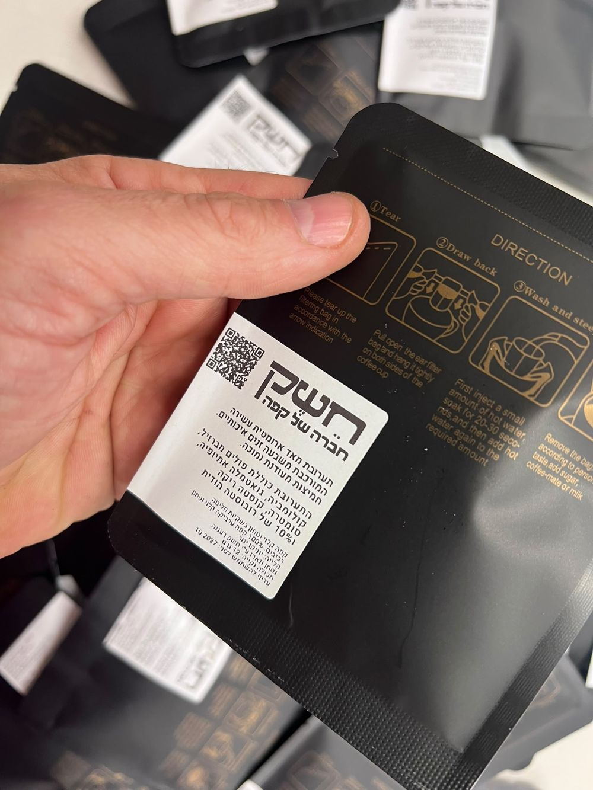
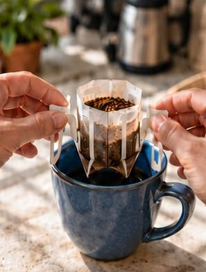
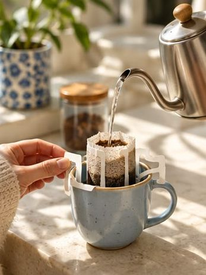

איך מכינים
קורעים. תולים. מוזגים.
דריפ באג הוא פילטר אישי עם קפה טחון. פותחים, תולים על הכוס ומוזגים מים חמים.
שלושה צעדים
בלי ציוד מיוחד, בלי התעסקות.

קורעים
פותחים את השקית, ואז קורעים את החלק העליון של הפילטר לאורך הקו.

תולים
פותחים את שתי הכנפיים ותולים על שפת הכוס.

מוזגים
קצת מים להרטבה, ו־30 שניות המתנה. אחר כך מוזגים לאט כמעט עד שפת השקית, נותנים לזה לחלחל, ועוד סבב אחד. כשהטפטוף נגמר, מסירים את השקית לפח, ויש קפה.
בכל שקית 12 גרם קפה.
כמה דברים קטנים
הכוס
בוחרים כוס שהכנפיים נתפסות יציב על השפה שלה, ושגבוהה מספיק כדי שהפילטר לא ישקע בקפה.
30 שניות בהתחלה
המזיגה הראשונה רק מרטיבה את הקפה. מחכים בערך 30 שניות, והקפה מוכן לשאר המים. קוראים לזה בלום.
בלי ציוד מיוחד
קומקום, מיחם או מים חמים ממכונה במשרד. זה מספיק.
שאלות
אפשר להוסיף חלב?
תשובה ממך